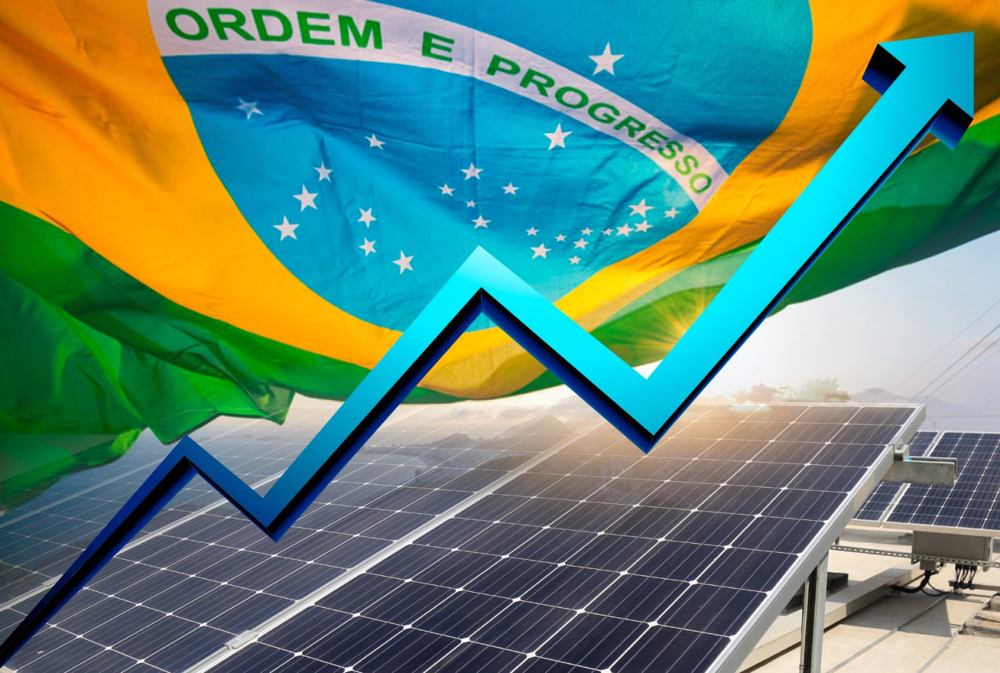

Energia Solar Bate Recorde de Geração no Brasil
O país alcançou um novo marco na geração de energia solar, representando 15% da matriz energética nacional. O crescimento do setor tem impulsionado a economia verde e criado milhares de empregos.
Leia mais